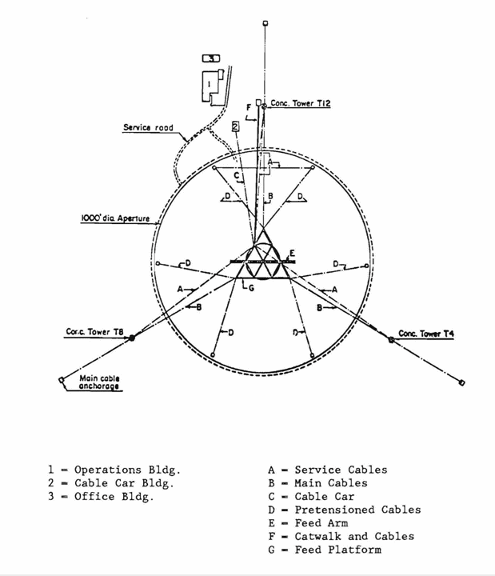
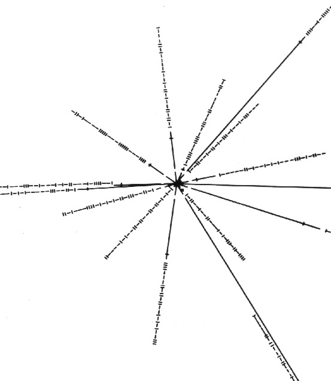

1. Some questions are labeled (F: first timer) and (R: returnee). First time attendees should focus on the "F" questions; returnees on the "R" ones. Everyone should answer the questions without designations. In all cases, return attendees shall not reveal the answers to first timers until sufficient effort is expended. (And, any bribes must be shared 50:50 will the Scavenger Hunt creators.)
2. You may consult any source anywhere but please be sure to indicate where you got your information. And watch out for bad websites! Actually, if you find any mis-information, tell us!
UAT14.01 Scavenger Hunt #0: The Arecibo Telescope
This scavenger hunt will explore some details of the Arecibo telescope and the Arecibo Observatory. 0.0 (F) Why do ALFALFA team folks always start enumerated lists with "0", not "1"?| 0.1 (F) Here is a schematic diagram of the AO telescope as viewed from above. The 900 ton platform hangs in midair on eighteen cables, which are strung from three reinforced concrete towers. One is 365 feet high, and the other two are 265 feet high. The towers are named as if they were on the face of a clock oriented with "12" to the north: T4, T8 and T12. Which tower is the tallest of the 3? Note: this map predates the ground screen/upgrade. |
 |
0.2 (R) Riccardo Giovanelli is the PI of ALFALFA but cannot be with us this year. For those of you who do not know him, his absence is a great loss, because he is by far the most honorific of all of us. Where on the site can you find a framed photograph of what is referred to as "Saint Riccardo" (complete with halo)?
0.3 When did the formal opening ceremony of the Arecibo Ionospheric Observatory take place?
| 0.4 (R) Let us suppose that there are some extraterrestrial beings in the vicinity of the Solar System whose lifeform resembles that of a many pointed star and that they intercept a junk U.S. spacecraft containing a partly degraded plaque showing the illustration to the right. Where does this illustration come from and what is its intended meaning? |
 Click here for larger view. |
{kind=link}
0.5 (F) In the movie "Contact", Jodie Foster and Matthew McConoughy have hanky panky in what building on the site?
0.6 (F) Below is a schematic diagram of the local sky as observed from Arecibo.
Imaging that you are standing at the
center looking up. Label on this diagram the following:
|  |
0.7 One of the cluster/group targets that we will observe in the confirmation LBW observations is known (to us) as AGC 190273 (see 0.13 below for an introduction to the AGC); it is one of the galaxies detected in the UAT group/cluster Hα images of but not detected by ALFALFA. Here are some links to images of it:
AGC 190273 0924574+113229 141.2392 11.5414 DR7Navigate DR9Navigate DSS2red.03 DSS2blu.03 NED1.0
On the diagram above, show the path of AGC 190273 in the sky as observed at Arecibo on Jan 13, 2014
0.8 (R) What is the maximum zenith angle at which the L-band wide (LBW) receiver can be positioned?
0.9 Why can't we observe a source directly overhead?
0.10 Below is a schematic diagram of the AO platform as viewed from the side.
 a. If we were going to observe AGC 190273 just as it crosses the meridian, at what azimuth
should we position LBW?
a. If we were going to observe AGC 190273 just as it crosses the meridian, at what azimuth
should we position LBW?b. What do we mean by an "uphill feed"?
c. What are the advantages of Gregorian optics over line feeds?
d. At what frequency does the very long line feed work?
e. What popular movie features a fight between the hero and the bad guy on the long line feed?
0.11 Beams, drifts and the resolution of radio telescopes a. What is the beam width of the L-band wide receiver?
b. How does this compare to the beam width of ALFA?
c. How long does it take for a source to drift across an ALFA beam?
0.12 Tracking sources with the Arecibo telescope Below is a schematic diagram of the hour angle - declination plane as observed from Arecibo. Familiarize yourself with this diagram and how to use it. (Note that this one comes from the good old days, so the limit designations don't include the Gregorian or LBW.)

- Use this
diagram to figure out how long a source at a Declination of 11 degrees
(such as AGC 190273)
could be tracked using an uphill feed on Carriage House #1.
- What about a source exactly on the equator?
0.13 ALFALFA team resources: The Arecibo General Catalog (AGC) As a member of the ALFALFA team, you have access to the private compilation of galaxies in the local universe maintained by the Cornell ExtraGalactic Group (EGG). The AGC contains information about the positions, sizes, magnitudes, morphologies, redshifts and HI properties of lots of galaxies. It is very heterogeneous, so it shouldn't be used as the ultimate authority on anything! But it can be very useful.... and we hope you will use it. However, there are a few rules.... a. According to the AGC use contract, how much is the AGC worth? We will use the AGC in some of the other Scavenger Hunts....
0.14 Getting ready to use TOPCAT the Tool for OPerations on Catalogues And Tables, an interactive JAVA graphical program which has been developed by astronomers at the Virtual Astronomical Observatory. TOPCAT is sort of "Excel for Astronomers" but also has astronomy-specific and Virtual Observatory-enabled applications. It runs under Linux, Windows or MacOS as long as JAVA is enabled. We find it amazingly handy, so we urge you to try it out yourself. This is optional activity for people who have a laptop, want to get started in TOPCAT, and don't already have it installed. Find the TOPCAT home page at: http://www.star.bristol.ac.uk/~mbt/topcat/. Follow the instructions to install the program on your laptop. Instructions on how to use TOPCAT can be found on the UAT groups Google sites page at https://sites.google.com/site/alfalfaugradgroups/. If you do not have access to the site yet, send email to Becky or David's gmail account. David's is jblxdwc@gmail.com. They can add you to the site. Once you are "in", look the bar on the left. Under **Programs** you will see UAT TOPCAT Docs, click there. If you have not visited this site recently (or at all), briefly review the documents there; refer to them as needed as we proceed. We will use TOPCAT in some of the other Scavenger Hunts....
This page created by and for the members of the ALFALFA Survey Undergraduate team Last modified: Tue Jan 7 17:12:36 EST 2014 by martha